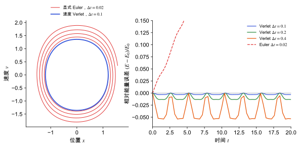

分子动力学
积分牛顿方程、恒温器与恒压器，以及时间平均怎样替代系综平均。
直观阅读需要
- 牛顿第二定律
- 系综与配分函数：系综与温度
完整推导还需要
只是提示，不需要先读完才能往下看。
直觉直观解释
分子动力学 (molecular dynamics, MD) 就是给定原子上的力，按牛顿方程一步步往前推，得到原子随时间的轨迹。力可以来自经典力场、MLIP（见 机器学习势）或 DFT。
两个关键问题：
- 怎么积分：时间步长有限，每一步都有误差。好的积分算法在长时间模拟中不会让总能系统地漂移。
- 怎么得到热力学量：实验对应的是某个温度、压力下的系综平均（见 系综与配分函数）。MD 给的是时间平均。如果体系是遍历的 (ergodic)，足够长的时间平均等于系综平均。要模拟恒温或恒压，需要在运动方程里加恒温器 (thermostat) 和恒压器 (barostat)。

| 符号 | 是什么 | 图里对应 |
|---|---|---|
| x, v | 位置与速度 | 左图坐标轴 |
| \Delta t | 时间步长 | 图例中的数值 |
| E_0 | 初始总能 | 右图纵轴的参考值 |
| (E-E_0)/E_0 | 相对能量误差 | 右图纵轴 |
定义与公式数学与推导
速度 Verlet 是时间可逆的、辛 (symplectic) 的积分器。辛积分器精确守恒一个与真实哈密顿量相差 O(\Delta t^{2}) 的“影子哈密顿量”，所以真实能量只在一个有界范围内波动，不会系统漂移（图中蓝、绿、橙曲线）。显式 Euler 不具备这一性质，能量会持续增长（图中红线）。
时间步长
步长要比体系中最快的振动周期小得多。分子晶体里最快的是含氢的伸缩振动（O–H、N–H、C–H），所以步长通常比只含重原子的体系小。
温度
其中 N 是原子数，k_B 是玻尔兹曼常数，T_{\mathrm{inst}} 是瞬时温度（严格来说左边应扣除约束的自由度）。瞬时温度会涨落，平均值才是体系温度。
恒温器
- Nosé–Hoover：引入一个额外的“热浴”自由度与粒子速度耦合，扩展体系的动力学生成正则系综 [Nosé 1984] [Hoover 1985]。小体系或谐振体系中可能遍历性不足，常用链式版本。
- 随机速度重标定 (CSVR)：每一步按正则分布随机地重标定动能，既能快速控温，又生成正确的正则系综 [Bussi et al. 2007]。
- Berendsen：把温度指数式地拉向目标值，控温稳定，但不生成正确的正则系综（动能涨落被压低），适合平衡阶段，不适合采样。
恒压器
Parrinello–Rahman 方法把晶胞矩阵作为动力学变量，允许晶胞形状和体积随压力变化，可以模拟相变和各向异性热膨胀 [Parrinello & Rahman 1981]。
在本研究线里的样子对应与边界
- MLIP 驱动的 MD：用 MACE 跑 β-甘氨酸超胞的 NPT 模拟，看结构在室温下是否稳定、晶胞参数随温度怎样变（与 准简谐近似与热膨胀 的结果对比）。
- 主动学习：从 MD 轨迹中挑出模型不确定的构型补充 DFT 数据（见 机器学习势 与 通用机器学习势的微调）。
- 能量漂移是质量检查：NVE 模拟中总能明显漂移，常说明步长太大，或势函数不光滑、力和能量不一致。
- 有限温度的性质：例如有限温度下的平均晶胞，再在其上计算压电系数，比较 0 K 结果与实验（见 压电张量）。
常见坑对应与边界
- 用 Berendsen 采样：涨落不对，热容、弹性常数这类涨落相关的量会出错。
- 平衡不足就开始统计：先看温度、压力、晶胞参数是否已经稳定。
- 统计误差按帧数算：相邻帧高度相关，有效独立样本数远少于帧数，需要用块平均估计误差。
- 超胞太小：长波声子被截断，热膨胀和热导等性质会有尺寸效应。
- 模拟中原子“爆炸”：MLIP 外推到训练集外的构型，见 机器学习势。
检验自己对应与边界
参考资料
论文Verlet 1967
尚未实际查阅，目前只是拟查阅书目
论文Swope et al. 1982
W. C. Swope, H. C. Andersen, P. H. Berens, K. R. Wilson, J. Chem. Phys. 76, 637 (1982)
尚未实际查阅，目前只是拟查阅书目
论文Nosé 1984
尚未实际查阅，目前只是拟查阅书目
论文Hoover 1985
尚未实际查阅，目前只是拟查阅书目
论文Bussi et al. 2007
尚未实际查阅，目前只是拟查阅书目
论文Parrinello & Rahman 1981
尚未实际查阅，目前只是拟查阅书目
分类统计力学与采样 · 方法 · 研究线：机器学习势 · 状态：草稿